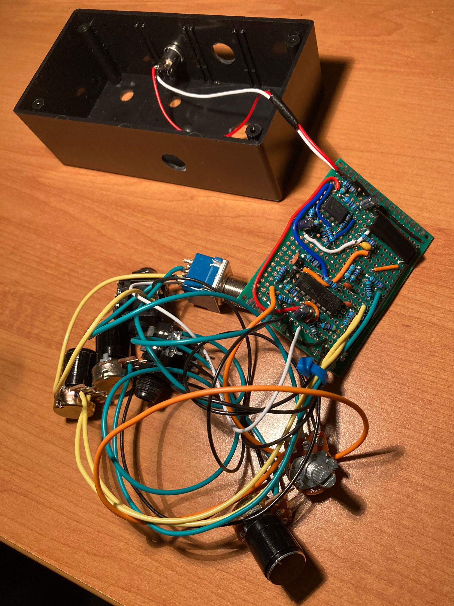

Auto-Wah Guitar Pedal
What is an "auto-wah" pedal?
An auto-wah will adjust the frequency response of the sound based on the guitar input dynamics, in such a way that makes a "wah wah" sound. This was achieved using a band pass filter, whose peak will be dynamically shifted to a higher frequency for stronger (louder) signals and lower frequency for weaker signals. Knobs for volume, sensitivity, upper and lower bounds for the center peak were also added without having to adjust the base design very much.
Progress
Breadboarding
Prototyping circuit board

Connecting all components
All components mounted in container
Pedal powered up and plugged into amplifier
How does it sound?
Funk (Dry)
Funk (Auto-Wah on)
Rock (Dry)
Rock (Auto-Wah on)